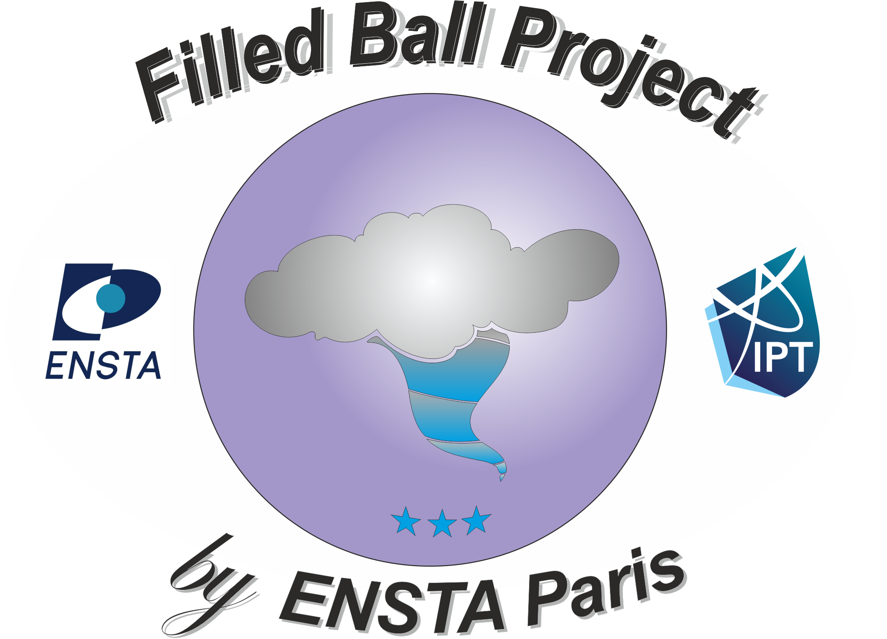
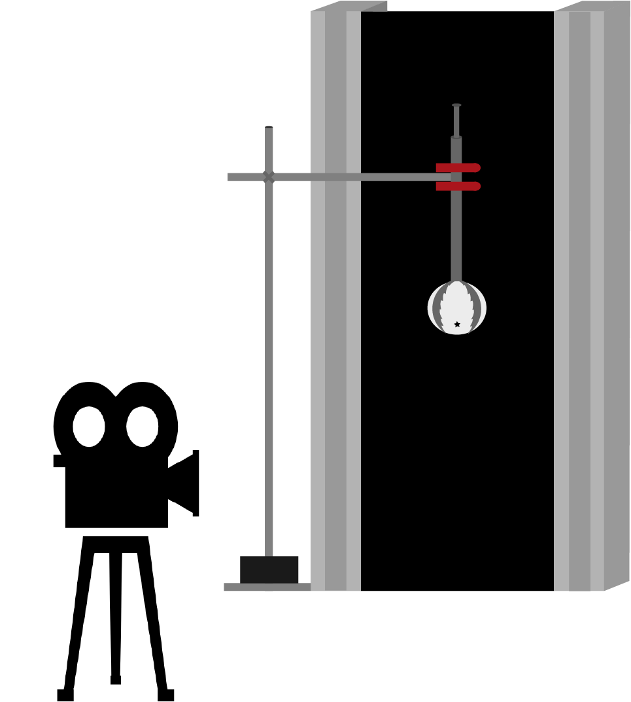
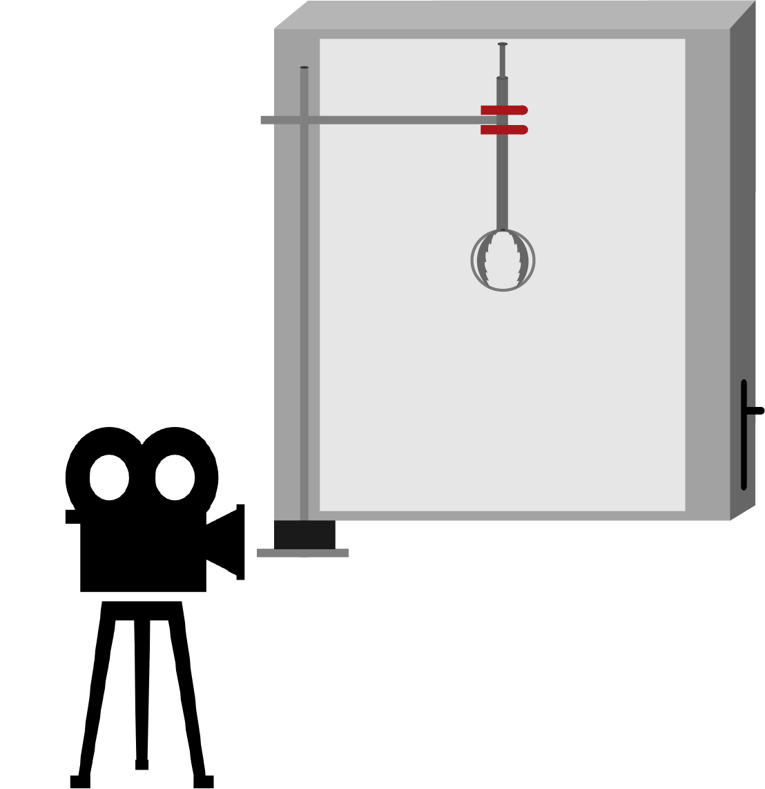

Filled Balls
Une balle de ping-pong qui a été partiellement remplie d'un liquide ou de sable rebondit beaucoup plus bas qu'une balle remplie. Expliquez ce phénomène. Comment la hauteur du rebond dépend-elle des paramètres pertinents ?
Afin de répondre à ce problème, nous avons choisi de nous limiter à l'étude de quelques paramètres qui nous semblent pouvoir jouer un rôle important dans l'amortissement du rebond de la balle de ping-pong :
Nous aurions également pu choisir d'étudier l'influence de la viscosité du fluide mais ce paramètre semble négligeable au regard de la littérature existante ([2]).
Pour remplir les balles, nous avons utilisé deux méthodes différentes. Dans le cas d'un fluide, nous avons simplement utilisé une seringue afin de l'injecter à l'intérieur de la balle. Dans le cas du sable, nous avons utilisé des balles transparentes semblables à des balles de ping-pong et pouvant se séparer en deux demi sphères afin d'introduire du sable avant de refermer la balle.

Le premier montage expérimental comporte une pince fixée sur une potence permettant de lâcher la balle ainsi qu'un fond noir. La chute de la balle de ping-pong est ensuite filmée à l'aide d'une caméra puis analysée à l'aide d'un programme Matlab permettant de repérer la position de la balle sur chaque image. Nous avons également reproduit ce montage en remplaçant le fond noir par un mur de LED dans le but de pouvoir observer le mouvement du fluide ou du sable à l'intérieur de la balle.
Dans le cas de l'eau, on osberve la formation d'un jet au premier rebond tandis que dans le cas du sable se forme un nuage de grains. Ces deux phénomènes semblent indiquer qu'un échange d'énergie a lieu de la balle vers le fluide ou le sable. Ce transfert d'énergie résulte en l'amortissement du rebond de la balle.

Le coefficient de restitution est un nombre sans dimension compris entre 0 et 1. Plus celui est proche de 0, plus le rebond est amorti. Il est défini de la manière suivante :


On remarque cette fois ci la présence d'un plateau à 0 pour le coefficient de restitution. Il n'y donc plus de second rebond pour certains volumes de remplissage. On peut retrouver de manière théorique la décroissance affine du coefficient de restitution en utilisant la conservation de la quantité de mouvement.


Pour étudier l’influence de la tension de surface du fluide, nous avons reproduit l’expérience avec de l’alcool. La tension de surface de l'alcool est environ trois fois plus faible que celle de l’eau.
Nos résultats pour le cas d'une balle remplie d'éthanol sont assez similaires à ceux obtenus pour une balle remplie de sable. En effet, sur la courbe du coefficient de restitution pour le second rebond, on observe la présence d'un plateau à 0 entre 30 et 60% environ. C'est-à-dire que pour un remplissage compris entre 30 et 60% le second rebond est totalement amorti.
On peut tenter d'expliquer cette observation en assimilant le sable à un fluide sans tension de surface. Ainsi le cas de l’éthanol serait un cas intermédiaire entre l’eau et le sable. La tension de surface agit comme une force de rappel sur la surface libre du fluide. On peut supposer que plus celle-ci est importante, moins la surface libre se déforme et moins il y a d'énergie dissipée. Ainsi quand la tension de surface est plus importante, le deuxième rebond n’est jamais totalement amorti.

Afin de montrer l’influence de la taille des grains de sable, nous avons comparé les résultats obtenus pour deux tailles de grain différentes. Nous avons utilisé du sable artificiel pour connaître assez précisément le diamètre des grains de sable. On remarque que plus les grains sont petits, plus le plateau sur la courbe du coefficient de restitution est petit. Autrement dit, l’intervalle de volume de remplissage pour lequel le second rebond est totalement amorti est réduit.
Les résultats que nous avons obtenu nous permettent de tirer les conclusions suivantes.
Dans le cas d'une balle remplie de fluide:
Dans le cas d'une balle remplie de sable:
[1] Rebound of a confined granular material: combination of a bouncing, F. Pacheco-Vázquez & S. Dorbolo
[2] Rebound and jet formation of a fluid-filled sphere , Utah State University , Taylor W. Killian, Robert A. Klaus, and Tadd T. Truscott
[3] Dynamics of a Partially Fluid-Filled Sphere, BYU Scholars Archive, Jeff Hendricks Taylor W. Killian Robert A. Klaus Nick Smith Tadd T. Truscott
[4] Mathematical Dynamics of Fluid Motion Inside of a Spherical Boundary, Taylor Killian and Dr. Tadd Truscott, Department of Mechanical Engineering